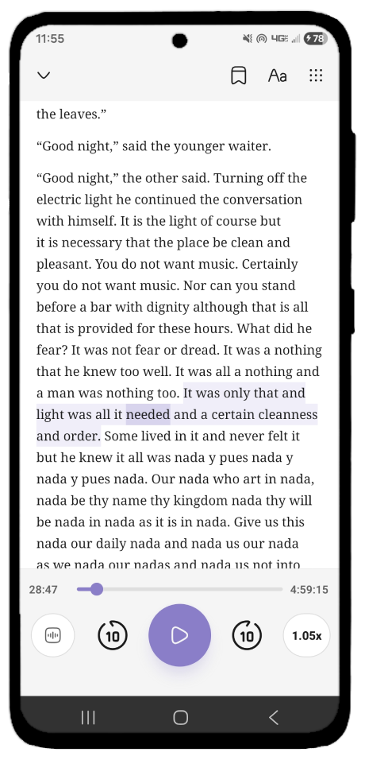
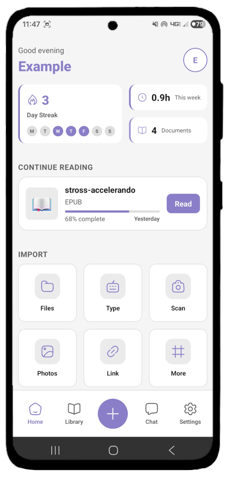
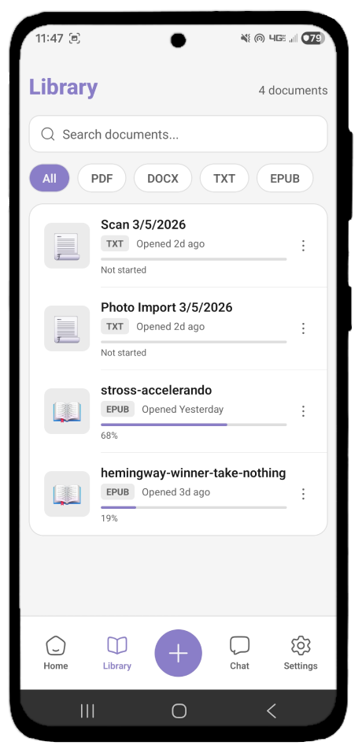
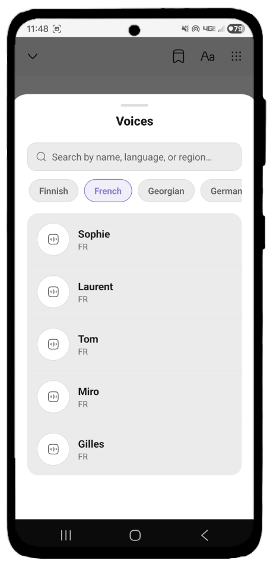
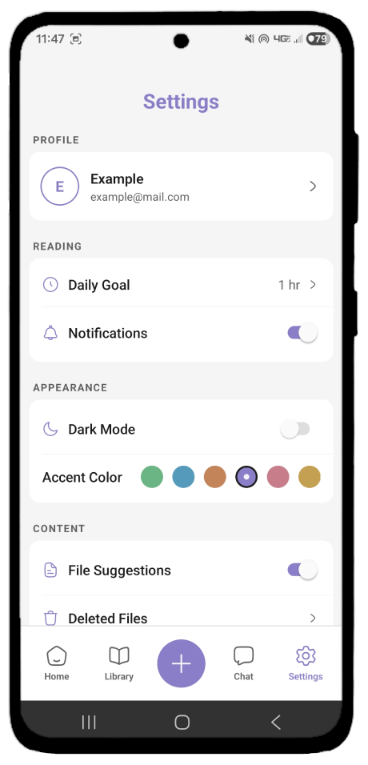

Transform PDFs, EPUBs, and documents into natural speech with 30+ AI voices. Completely on-device, completely private, completely free.

Powerful features designed to make reading through listening effortless, natural, and enjoyable.
Powered by Sherpa ONNX neural models, choose from over 30 voices across a dozen languages that sound remarkably human.
Import PDFs, EPUBs, DOCX, TXT files, web links, photos, and scanned documents. Read anything, anywhere.
Track your daily reading habits with streaks, weekly listening hours, and per-document progress to stay motivated.
Clean, minimal interface with four themes, six font options, and real-time sentence highlighting to keep you focused.
All processing happens on your device. Zero cloud calls, zero data collection. Your documents stay yours.
Once voice models are downloaded, everything runs locally. Listen on planes, in subways, or anywhere without internet.
Three simple steps to transform how you consume written content.
Add documents from your files, type text directly, scan physical pages, paste web links, or import photos.
Choose from 30+ natural AI voices, adjust playback speed, and follow along with real-time sentence highlighting.
Build daily reading streaks, monitor your weekly listening hours, and pick up right where you left off.
A clean, intuitive interface that puts your content first and gets out of the way.




Join readers who've discovered a better way to consume their documents. Free, open source, and private by design.